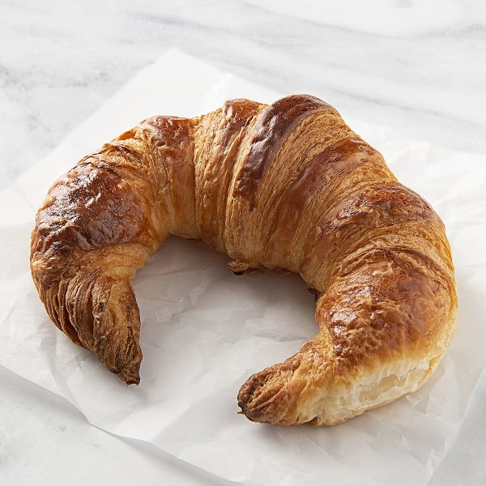

Croissant
Ingredientes para croissants:
- -Masa de hojaldre (puedes comprarla o hacerla con harina, levadura, sal, azúcar, agua y mantequilla)
- -Mantequilla (para capas adicionales en la masa)
Modo de preparación resumido:
- -Extender la masa de hojaldre en forma rectangular.
- -Colocar láminas de mantequilla en la masa y doblarla en capas
- -Refrigerar y repetir el proceso varias veces (pliegues) para crear capas.
- -Estirar la masa y cortar triángulos.
- -Enrollar cada triángulo desde la base hasta formar el croissant.
- -Hornear hasta que estén dorados y hojaldrados.
- ¡Ahora puedes disfrutar de croissants frescos y deliciosos!